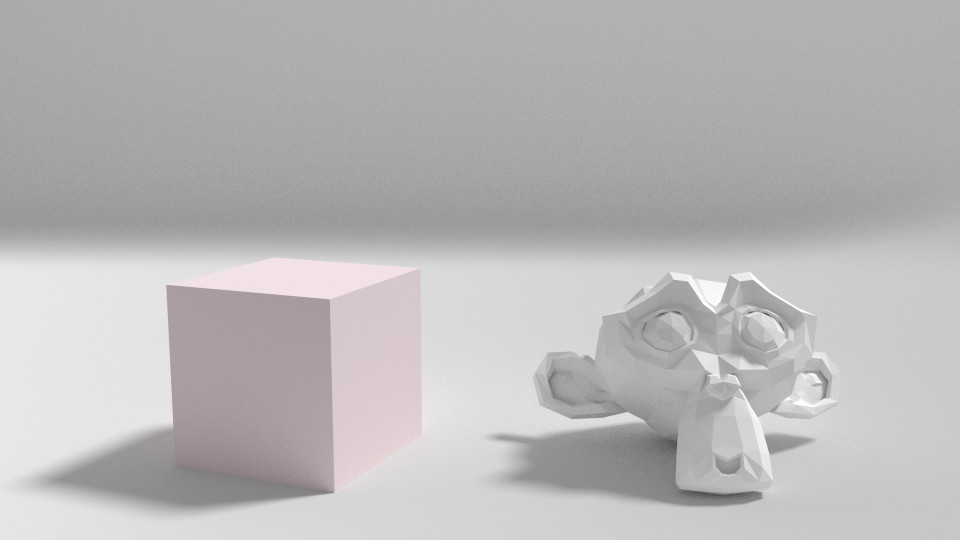
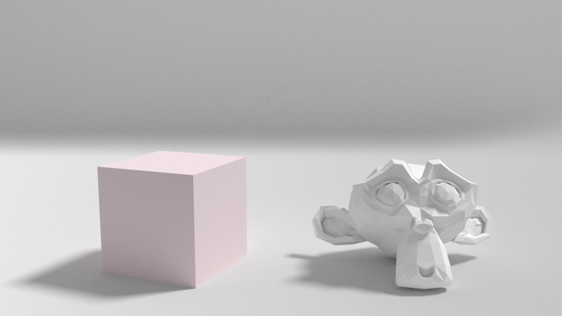
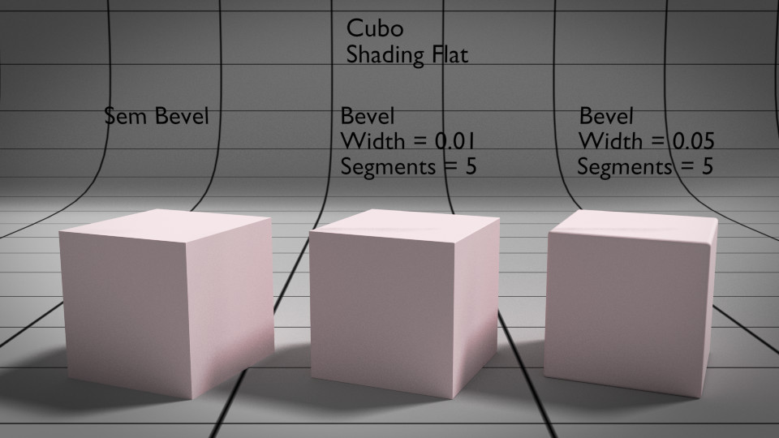
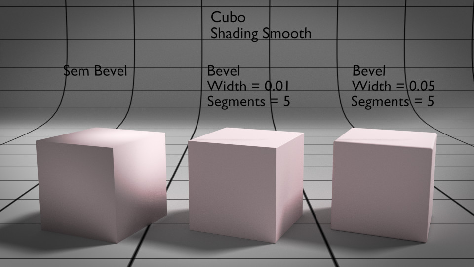

Algumas Dicas para criar Imagens bem sucedidas
Fundo
O fundo utilizado nos renders diz muito sobre o profissionalismo do seu autor. O fundo não deve roubar atenção mas deve complementar a imagem, fornecer um contexto. Mesmo as imagens mais simples, de teste, podem ser partilhadas com profissionalismo e brio. Se a imagem é para partilhar, deve preocupar-se com o fundo.
Sugestão: consulte Fundo para Renderização.
 


Detalhes subtis
Depende da imagem e da intenção mas, regra geral, é sempre mais interessante se introduzir alguns detalhes subtis através de bump/normal/displacement maps. Quebra a monotonia do flat e da simetria.
Bisel/ Chanfro (Bevel)
No mundo real, praticamente não existem arestas afiadas, arestas sem chanfro. Pode ser muito subtil, apenas um ligeiro arredondamento entre duas faces, mas está presente tanto em objetos naturais como em objetos criados por mão humana.
Smooth/Flat
A combinação de Smooth/Flat na geometria ou superfícies tem impacto nos reflexos da luz e depende muito do efeito que se pretende. Existem várias ferramentas para combinar estas duas caraterísticas.
Estes cubos têm todos 8 vértices. A diferença no aspeto está relacionada com a utilização do modifier Bevel que introduz mais vértices para arredondar as arestas.
É comum utilizar Smooth (shading) + Edge Split ( e + Mark Sharp Edges) se quiser preservar algumas arestas ou o Subdivision Surface + Smooth (shading).
Sugestão: consulte Smooth/Flat.
Não utilizar apenas uma cor difusa e sólida
No Cycles (e não só!), não utilize apenas uma cor difusa (diffuse) sólida. No mundo real, não existem materiais completamente difusos (diffuse). Quase todos os materiais refletem pelo menos alguma luz. Utilize sempre algum reflexo, mesmo que muito suave.
É também comum haver alguma variação, mesmo na cor difusa. Misture duas cores difusas, podem ser muito aproximadas mas não exatamente os mesmos valores.
Sugestão: consulte Introdução aos materiais.
Não usar cores com valores máximos
No Cycles (e não só!), não utilize cores com Value (formato HSV) superior a 0.8. Não usar cores com Value (formato HSV) superior a 0.8 em shaders de tipo Diffuse, Glossy, Velvet e Anisotropic. Valores acima de 0.8 raramente existem no mundo real e aumenta a probabilidade de "fireflies" ("pirilampos", pixels brancos ou muito claros) nos renders.
Sugestão: consulte Introdução aos materiais.
Iluminação
Crie um sistema de iluminação eficaz. Experimente diferentes valores e posições das luzes. Tenha especial atenção às sombras. A iluminação com 3 pontos e o Ambient Occlusion são duas ferramentas comuns mas não se aplicam a todos os casos.
Sugestão: consulte Introdução à iluminação.
Composição, correção
Utilize a composição para acrescentar algo às suas imagens. É praticamente impossível esconder a utilidade de manipular o constraste e as cores no compositor.
Melhorar constraste, adicionar um efeito de Vignette ou Aberração Cromática são opções comuns para melhorar a imagem final. É claro que aquilo que adiciona ou manipula no compositor depende sempre do efeito que pretende.
Sugestão: consulte Introdução ao editor de nós.

Sugestão: consulte Introdução à composição.
Profundidade de Campo (Depth of Field)
É uma forma simples de aumentar o realismo das imagens e de isolar ou destacar os elementos mais importantes na composição. Não é preciso exagerar...
Nas imagens abaixo, mostramos um exemplo sem e com Depth of Field, maior constraste e Vignette. Os últimos dois foram adicionados no compositor.


Sugestão: consulte Introdução à composição.
Imperfeições e sujidade
Adicione imperfeições. O mundo real está cheio de "imperfeições". No 3D, as imperfeições têm de ser adicionadas. Adicionar assimetrias (na modelação, animação ou composição da cena) e "sujar" a imagem (adicionar falhas, lixo, etc.) são duas opções comuns.
Enquadramento, organização visual e lente
Planeie cuidadosamente a composição da sua cena. Para auxiliar nessa tarefa, o Blender disponibiliza algumas linhas de guia para composição. A Regra dos Terços é uma solução clássica que resulta muito bem.

Uma outra preocupação que deve cuidar é a da escolha da distância focal. Os mm na distância focal (focal length) influenciam imenso a composição. Em síntese: lentes grande-angular exageram a distância e o tamanho relativo dos objetos; lentes telefoto esbatem diferenças na distância e tamanho relativo dos objetos. Para mais informações e exemplos, consulte o texto sobre a Câmara.
Nas imagens abaixo, foram utilizadas lentes com 100mm e 20mm. Obviamente, a câmara teve de ser ajustada/movimentada para compensar e obter uma composição similar.


Sugestão: consulte Configurações básicas da câmara e Introdução à composição.